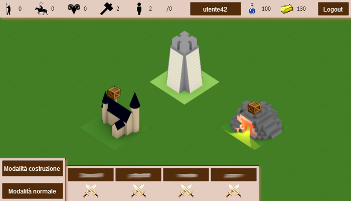
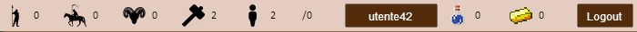
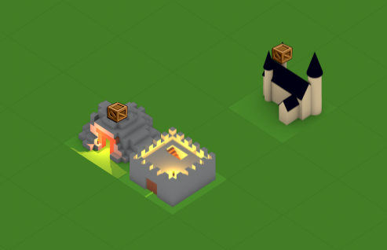
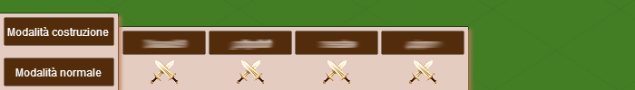
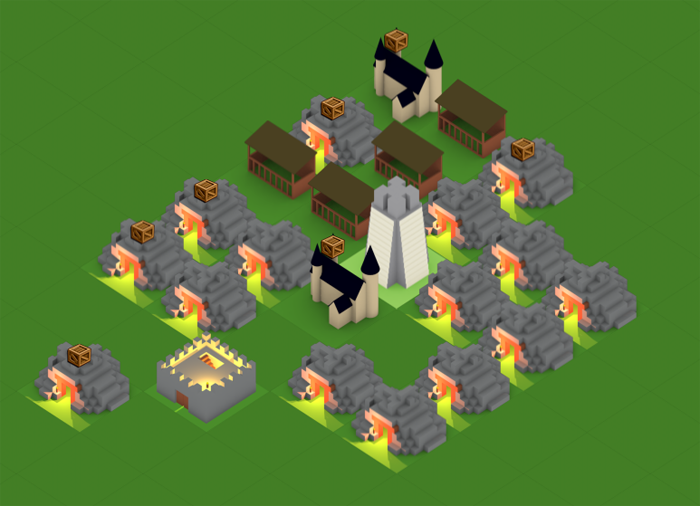

Manuale v2.00 (Changelog)
1 Primi Passi
Se stai giocando per la prima volta, puoi provare a seguire questo manuale per poterti orientare più facilmente.
Per prima cosa sarà necessario creare un account di gioco tramite l'apposito form di registrazione presente nella Home del sito, successivamente sarà necessario autenticarsi con l'apposito form presente nella stessa pagina.
Una volta autenticati vi troverete di fronte l'area di gioco.
1.1 Area di Gioco Torna Su
L'area di gioco è lo spazio nella pagina che racchiude tutti gli elementi visualizzabili del social game.
Questo è un esempio della schermata principale di gioco.
Sul lato superiore sono visualizzate le unità possedute e le risorse immagazzinate fino al momento attuale.
Questa è la barra di stato, contenente le unità e le risorse possedute.
Al centro dell'area è visibile una visuale generica che rappresenta il villaggio, in cui sono visualizzate le caselle vuote e gli edifici già costruiti.
Questo è il villaggio che amministrerai giocando.
Infine è visibile la barra degli strumenti, in cui sono presenti i menu principali di gioco.
Questa è la barra inferiore di gioco.
1.2 Nozioni di Base Torna Su
Nel gioco sono disponibili due tipi di risorse: le pozioni e l'oro. Queste risorse vengono accumulate giocando e serviranno per costruire o migliorare edifici e unità.
Conviene sempre mantenere alto il livello produttivo del villaggio, costruendo gli edifici produttivi appropriati. Una volta instaurata una buona economia, sarà il momento di sviluppare un esercito.
Clicca qui per accedere alla sezione relativa agli edifici oppure qui per la sezione relativa alle unità.
1.3 Il Villaggio Torna Su
L'area centrale è il punto più importante del gioco. In essa è racchiuso tutto lo spazio disponibile per espandere il tuo impero.
Man mano che sviluppi il villaggio, diventerà sempre più grande e abitato.
Ha una dimensione di 40x40 celle e permette di avere una visione generale del tuo villaggio.
Inizialmente saranno presenti soltanto gli edifici di primaria necessità.